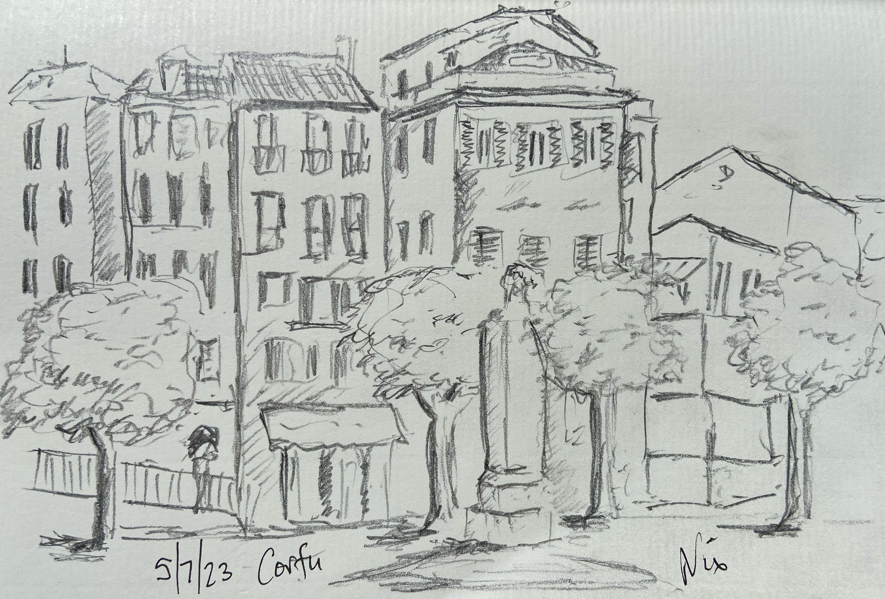

Lower Largo
The summer is going down fighting, with thunder, rain, heat and humidity to set the mood. Injuries and the conflict between living and working raging, both raising anxiety…
13th Aug 2023
Over the summer, I have changed the machinery behind the Niximagery website and added a Niximagery Substack. The substack is another website with a facility for you to sign up for new posts via email, if you want to.
Also over the summer, we took a week in Corfu but we took no proper cameras with us. Nowadays, of course, like the mythological London rat, you’re never more than six feet from a camera in your phone, so we did capture some memories to share. Once we got back, the stories of wildfires across Greece and the islands of course, made us sad. We hope the wonderful people we met there are all OK in the wrath of a changing climate.
Back home, and good habits are restored, including walking in the Perthshire woods and some runs up the East Neuk of Fife and across the bridge to Yellowcraig Beach. I hope you enjoy the words and images.
